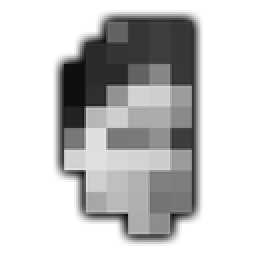
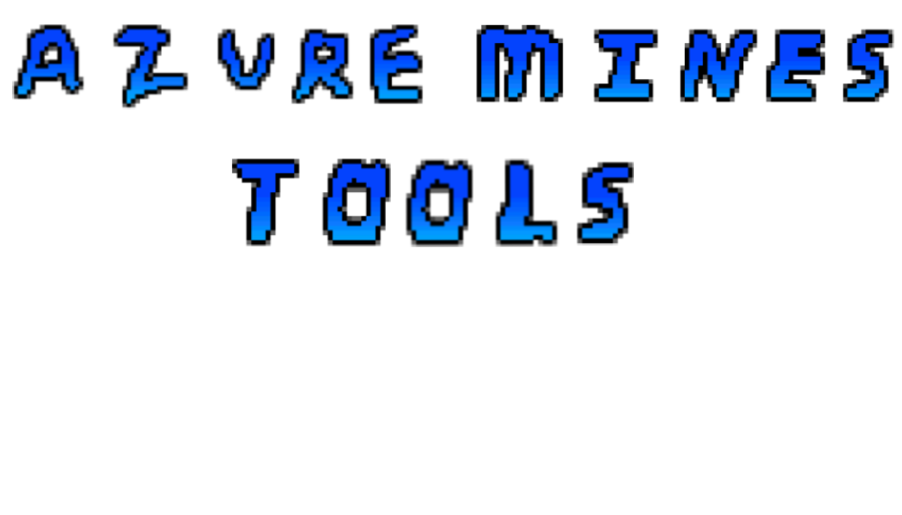

Inventory Stats
Finds Tracker
Trading Calculator
Upg. Tracker
Ore-ography(WIP)
This site has a number of useful tools for Azure Mines.
Everything saves locally. So as long as you don't delete your browser data, each page will be exactly how you left it when visiting the site again.
If you have any suggestions or find any bugs you can ping @D3P290876 in the Azure Mines Club Discord server.
Congrats!
I bet you clicked one too many times and closed this pop-up by accident atleast once, right?
To find the Ambrosia maybe you should *search* the word "Giveaway" somewhere. Perhaps on a certain page involving trading?